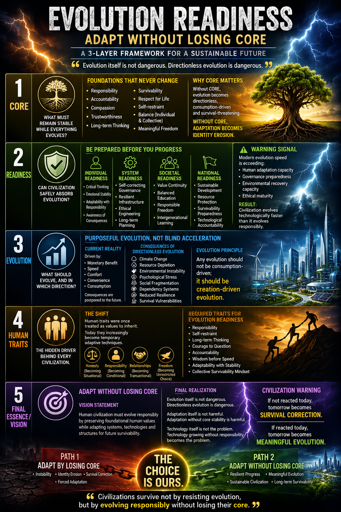

“The future will not ask how fast we evolved, but what we lost while evolving.”
The Intelligence of Adaptation
Evolution without CORE is civilization accelerating toward survival correction. If core itself changes every generation, then evolution has no anchor. If core becomes rigid, adaptation becomes impossible. A perfect balance is: Adaptability + Stability. Purposeful advancement must replace uncontrolled acceleration. WE believe that civilizations survive not by resisting evolution, but by evolving responsibly without losing their foundational stabilizing anchors. Freedom without responsible boundaries becomes directionless choice. Meaningful, Survivable & Accountable freedom should guide the direction. Values are no more a constant. It has become a changing variable. Civilizations should evolve slowly enough for values, systems, family structures and survivability mechanisms to adapt together.
The Civilization Choice
| Path 1: Directionless Adaptation | Path 2: Meaningful Evolution |
|---|---|
| Adaptation by losing CORE, leading to identity erosion. | Adaptation WITHOUT losing CORE, leading to resilient progress. |
| Evolution for consumption and temporary social trends. | Evolution for survivability, creation, and long-term continuity. |
| Forced adaptation under survival correction . | Sustainable civilization and long-term survivability. |
The Three Layers of Readiness
Layer 1: The Stable Core
Non-negotiable values that act as anchors:
- Responsibility and Accountability .
- Compassion and Trustworthiness .
- Self-restraint and Long-term thinking.
Layer 2 & 3: Preparedness & Direction
Evaluating if systems can safely absorb evolution:
- System Readiness: Self-correcting governance and ethical engineering.
- Meaningful Model: Technology that inherits core values rather than just providing convenience.
The Hidden Driver: Human Traits
When traits like honesty and responsibility become temporary situational techniques rather than stable character foundations, trust weakens and systems become fragile . WE must prioritize wisdom before speed. Reframed Evolution Principle - Current Model : Evolution for consumption. Meaningful Model: Evolution for survivability, resilience and long-term continuity. The Evolution Readiness Principle : Adaptability should not destroy foundational stability.The essential sequence to create a natural civilization flow : CORE VALUES → READINESS → HUMAN TRAITS → EVOLUTION.
The Warning Signal
The danger is: Evolution without direction + adaptation without preparedness. Nature evolves slowly through correction cycles. Human civilization evolves faster than its correction systems.
“Any evolution should not be consumption-driven; it should be creation-driven evolution. If not reacted today, tomorrow becomes survival correction. If reacted today, tomorrow becomes meaningful evolution.”
THE CHOICE IS OURS.